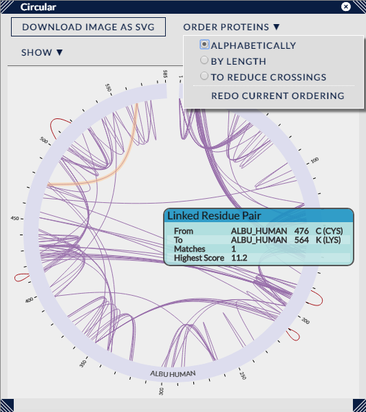

This view uses a version of the popular Circos layout to display the Cross-Links. Proteins are arranged around the circumference of the circle and cross-links are shown connecting proteins at the appropriate positions.
Like the other views in Xi View, individual cross-links can be highlighted by moving the mouse pointer over them (plus a tooltip supplies details on the particular cross-link). Similarly, cross-links can be selected by using the left mouse button. In conjunction with the CTRL key, multiple cross-links can be selected (by clicking on unselected links) and currently selected cross-links can be unselected.
Highlighting and selecting can also be performed on the protein representations. Here, selecting a protein will also select all the cross-links that connect to it. Again, in conjunction with the CTRL key, multiple proteins can be selected and deselected.
Clicking with the left mouse button on the background of the view will clear all selections.
There are two drop-down menus present that can affect the visual presentation of the cross-links in the circle view.
The first, "Order Proteins", decides the ordering of proteins around the circumference (and as such is not useful for single protein searches). However, for multiple proteins, the proteins may be ordered either alphabetically (default), by sequence length, or using an algorithm intended to sort the protein ordering to reduce visual crossings in the display.
Example: Alphabetical sort vs Reduce Crossings sort